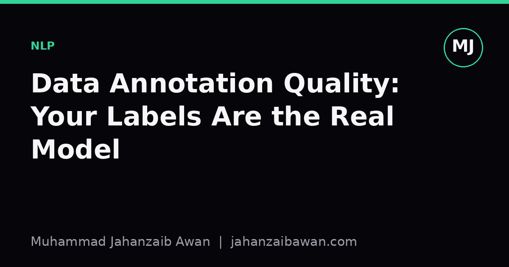

Data Annotation Quality: Your Labels Are the Real Model
Before you tune a single hyperparameter, ask who labelled your data, how, and whether two of them would agree. The answer often matters more than the architecture you chose.

The model you actually trained
Every supervised NLP system is a function fitted to a set of labels, and those labels were produced by people following a set of instructions that were themselves ambiguous in places, revised halfway through the project, and interpreted slightly differently by every annotator who touched them. When we talk about a model's performance, we usually mean how well it reproduces this messy human process, not some platonic notion of the correct answer. That distinction sounds pedantic until you sit down and actually read a sample of your own labelled data closely.
Take a sentiment classification task on product reviews. A review that says 'it works, I suppose, though I expected more for the price' is not obviously positive or negative. One annotator might tag it negative because of the complaint, another positive because the product does work, and a third might tag it neutral because they are trying to be careful. None of them is wrong given the instructions they were handed. If your guidelines never addressed mixed-sentiment or hedged language, this ambiguity gets baked into every downstream number you report.
The practical consequence is that your model's apparent error is a mixture of two very different things: cases where it genuinely misunderstands language, and cases where the label itself was a coin flip between two defensible readings. You cannot separate these by looking at accuracy alone. A model stuck at 82 percent accuracy might be a mediocre model on a clean dataset, or it might be an excellent model bumping against a noise ceiling created by inconsistent labelling. Without measuring that ceiling, you are guessing.
Measuring agreement properly, with a worked example
The standard tool for this is inter-annotator agreement, and Cohen's kappa is the workhorse for two annotators on a categorical task. Suppose two annotators label 200 reviews as positive or negative. They agree on 170 of them, giving raw agreement of 85 percent, which sounds respectable. But raw agreement ignores the fact that two annotators could agree by chance even if they were labelling randomly, especially when one class dominates.
Say 70 percent of the reviews are positive. Two annotators guessing according to that base rate would agree with each other purely by chance roughly 58 percent of the time, just from both being biased toward the majority label. Kappa corrects for this: it is the observed agreement minus chance agreement, divided by one minus chance agreement. Plugging in numbers close to this scenario gives a kappa somewhere in the 0.6 to 0.65 range, which most annotation guidelines classify as only 'moderate' agreement, not the 'excellent' that 85 percent raw agreement might suggest to someone who has not seen the correction applied.
This matters because a moderate kappa tells you the task itself has genuine ambiguity that your instructions have not resolved. The fix is rarely to hire better annotators; it is almost always to rewrite the guidelines with concrete edge-case examples, run a small pilot, remeasure kappa, and iterate before you commit to labelling thousands of documents. I have seen teams skip this step under deadline pressure and pay for it later when a reviewer asks why validation performance refuses to climb past a certain point no matter what they change in the model.
For tasks with more than two categories or continuous scales, Krippendorff's alpha generalises the same idea and handles missing labels more gracefully. The specific statistic matters less than the habit: measure agreement before you trust the gold labels, and treat a low score as information about the task, not a nuisance to be reported and forgotten in a footnote.
Where quality problems hide until deployment
Annotation quality issues rarely show up as obvious errors; they show up as systematic bias that a train-test split from the same annotation batch will not reveal. If the same small group of annotators labelled both your training and test sets, their shared blind spots and shared conventions leak into both splits equally. Your held-out accuracy looks fine because the test set inherits the exact same quirks as the training set. The model has learned to imitate the annotators, and the test set confirms that imitation rather than testing generalisation to how language actually varies in the wild.
This is a subtler form of leakage than the classic case of duplicate documents crossing the split boundary, but it is just as damaging to any claim you make about real-world performance. A model can score well above a naive baseline on an in-distribution test set built by the same three annotators, then degrade sharply the moment it meets text labelled, or produced, by a different population with different conventions or a different demographic background. If your deployment setting involves different writers, different topics, or a different time period than your annotation batch, that gap can be substantial and is very hard to spot from the metrics you already have in hand.
A useful practical check is to have a second, independent group re-annotate a random sample of your test set from scratch, without seeing the original labels, and compare their agreement with the original annotators against your model's agreement with the original annotators. If your model agrees with the original labels about as often as an independent human does, you are probably near the practical ceiling for that dataset. If the independent humans disagree with the originals far more than your model does, that is a strong signal the original labels themselves have systematic quirks that your model has simply learned to reproduce rather than to understand.
What to actually do about it
Treat your annotation guidelines as a first-class research artefact, not paperwork. Version them, date each revision, and log which batch of data was labelled under which version, so you can trace disagreement back to a specific instruction change rather than guessing after the fact. Run a small pilot on fifty to a hundred examples before scaling up, compute agreement, and revise the guidelines around the specific cases annotators disagreed on rather than rewriting everything from vague intuition.
Report inter-annotator agreement alongside model performance whenever you publish or present results, even informally, and be explicit that your accuracy figure is bounded above by that agreement, not by some abstract notion of perfect labelling. When you split data for training and evaluation, split by annotator batch or by source population where feasible, not purely by document, so that your test set actually probes generalisation rather than merely re-testing familiarity with one annotation team's habits.
None of this is glamorous work compared with trying a new architecture, and that is exactly why it gets skipped. But the ceiling on what any model can learn is set by the consistency of the labels it is asked to imitate, and no amount of clever engineering pushes a model meaningfully past a ceiling built into the data itself.